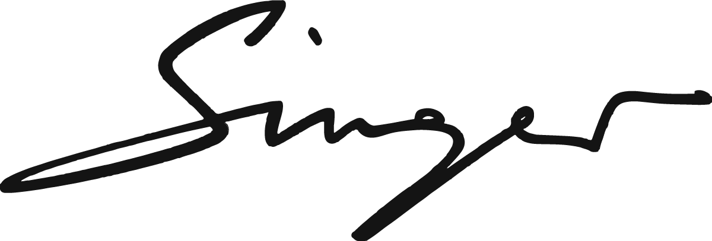
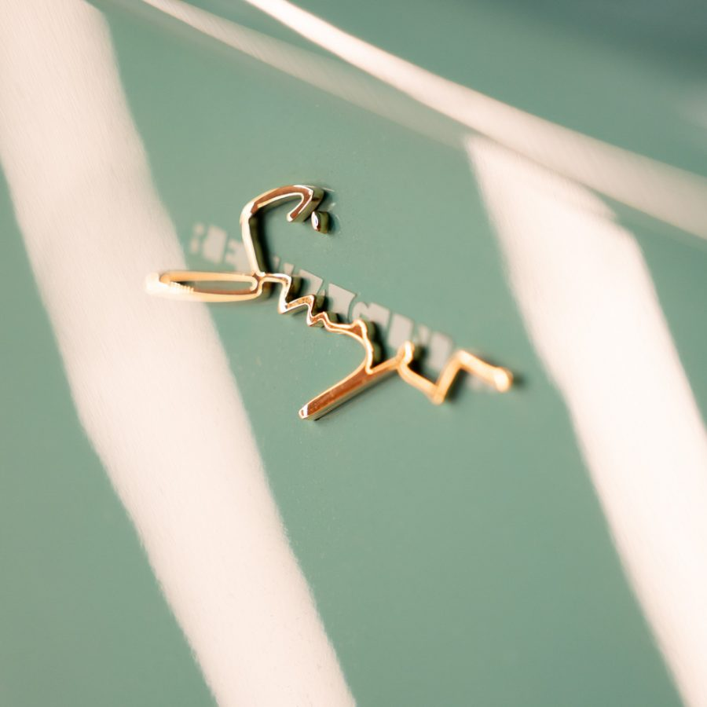

7 个品牌 · 官网原始素材 · 2026.09.16
德国 · 豪华与性能定制
厚重衬线与紧凑大写字标。笔画坚实，传达力量感和稳定的辨识度。
德国 · 豪华个性化定制
细致的衬线字标与两侧翼状横线。对称、舒展，呈现礼仪感和豪华气质。
德国 · 性能改装与赛车
三个字母组成紧凑图形。斜切、共用水平线，让品牌名本身成为符号。
德国 · Porsche 个性化升级
低矮、横向延展的字标。字形节奏整齐，强调精度与秩序。

美国 · 经典 Porsche 修复与再创作
流畅的手写字标。以签名般的辨识度表达作者性，与机械化字形拉开距离。
日本 · 宽体改装与汽车文化
哥特风格的 LB 交叠字母，与小号品牌名组合。符号性强，适合汽车文化与服饰表达。
日本 · Porsche 宽体定制
官网采用粗壮、前倾的 RWB 字标。视觉直接，依靠字形和作品建立鲜明个性。

同一品牌 · 不同尺度与载体
从网页字标到金属徽章，签名轮廓保持一致。材质可以变化，核心识别持续复用。